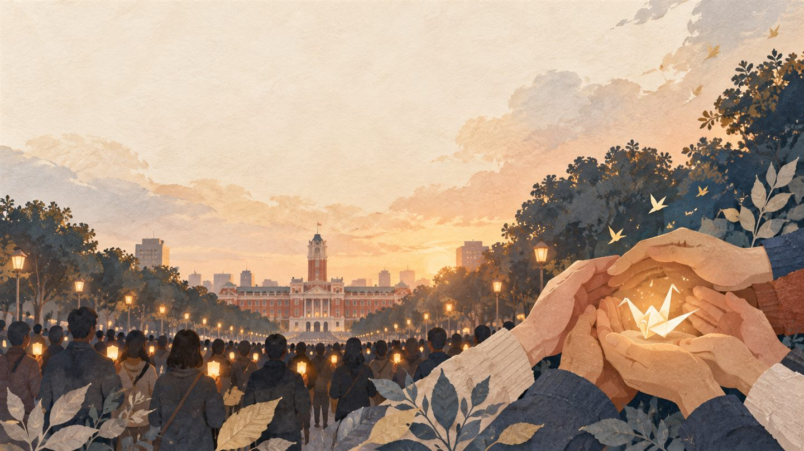

置顶快报・公共倡议反虐童！护孩子！
10/17 一起上凯道！
各位关心孩子的朋友，我是阿信，台北市议员徐立信。
近期选区内爆发幼儿园集体虐童案，孩子遭受体罚、恐吓与不当对待。我们发现现行制度有重大缺口：0～2 岁托婴中心有强制监视器规范，但 2 岁以上幼儿园却缺乏明确法律依据！
保护孩子不能出现缺口！立信邀您一起站出来，为孩子与第一线教保人员发声！
交通提醒
警方交通勤務为 9:00–20:00，并非集会时间。12:00 起凯达格兰大道（中山南路不含至公园路不含）北侧 6 线车道管制；预计 19:00 撤场后开放，实际依现场交通弹性调整。周边公交车可能改道，请预留时间并查询官方公告。
我们的诉求
- 建立 2 岁以上幼儿园监视设备法律依据。
- 订定明确设置、保存与调阅规范。
- 建立地方政府稽查监督机制。
- 发生疑虑时依法保全影像、厘清事实。
站出来，一起守护孩子的平安成长！
引用来源｜台北市议员徐立信 Facebook 公开贴文／影片：观看原始贴文与影片